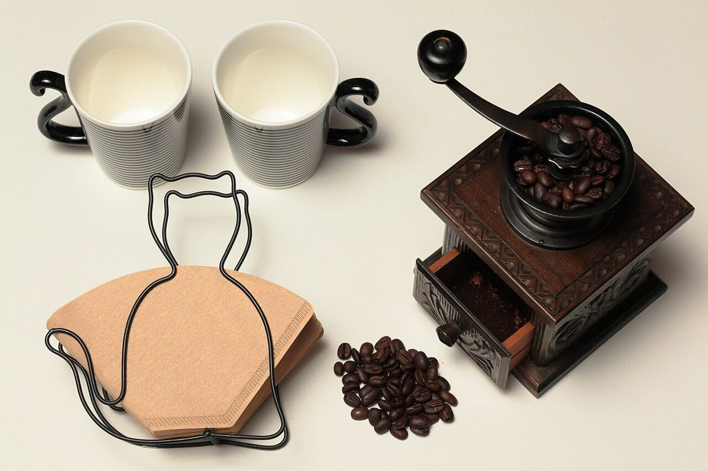
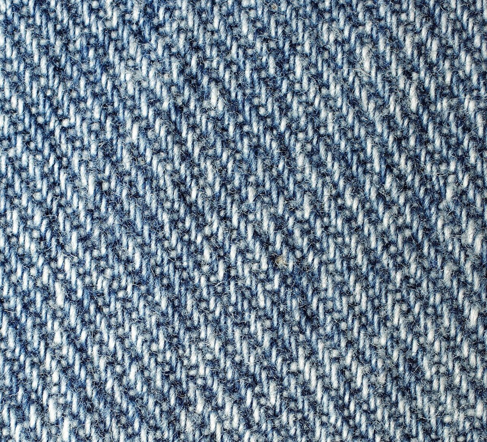
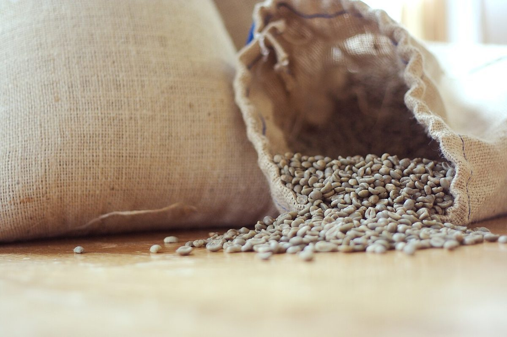

粒
質感 ◎ ／ 大きさ 小
焙煎豆の質感を近づいて見た写真です。
選手名鑑
お店について確認できているのは、所在地とInstagramのアカウントだけです。
このページの「選手」は物の写真で、紹介文は制作側が想像して書いたものです。お店の実際の様子・考え・メニューとは関係がありません。
想像してみる
質感 ◎ ／ 大きさ 小
焙煎豆の質感を近づいて見た写真です。

形 ◎ ／ 道具感 大
道具を並べた一枚です。お店にあるものではありません。

色 茶 ／ 縁 白
白いドリッパーと茶色い紙の組み合わせです。

角 ◎ ／ 段 多
四角を積み重ねた写真です。

斜め ◎ ／ 青
布のクローズアップです。コーヒーとは関係のない質感の選手です。

色 淡 ／ 袋 麻
淡い色の豆が袋からこぼれた写真です。
おまけ

浅い色から深い色まで並べた写真です。お店で扱う豆の写真ではありません。